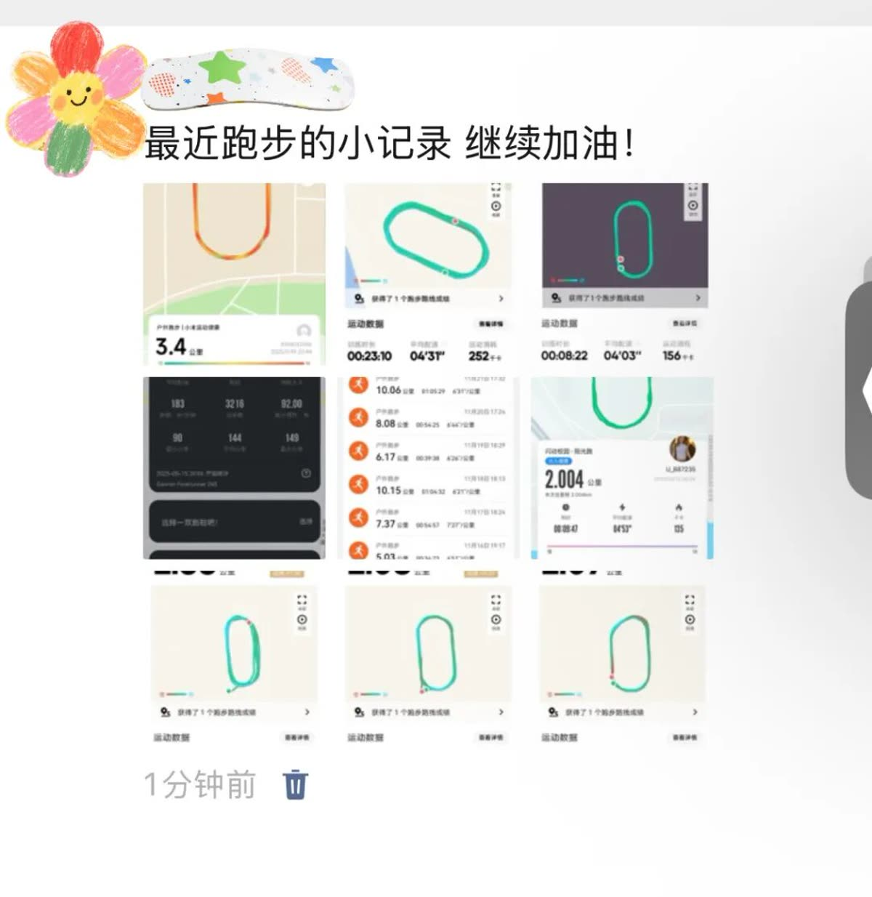
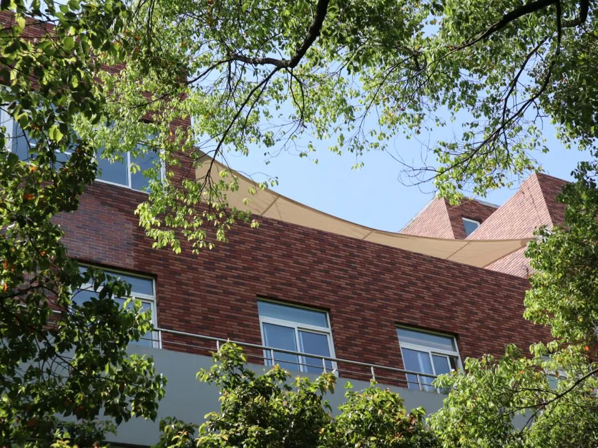

PHOTOGRAPHY, DESIGN & EVERYDAY STORIES
把日常，
收藏成故事。
我是肖珂，新闻学在读、内容创作者。
做采访写稿，也用照片、版式和影像，
留住那些值得多看一眼的瞬间。
a few ordinary, lovely things.
NOTE TO SELF好好看，
慢慢记录。collecting the everyday
慢慢记录。collecting the everyday
01 / FIELD NOTES
THE LITTLE THINGS
给日常，留一页。
树影、窗光、路过的街巷。
一些没有大事发生的好时刻。
a small collection of light & quiet.
✳光一照，
A NOTE BETWEEN FRAMES
光一照，
普通的日子也会发亮。
把一扇窗、一片叶、一小段街道放在一起。
照片之间，也可以有自己的语气。
02 / PAPER PLAY
CUT, PASTE & DAYDREAM
让风景，溜出相框。
照片 × 纸张 × 一点点想象。
把风景接成一页小小的白日梦。
leave a little room for imagination.
翻看这组拼贴 ↗03 / TYPE STUDIES
WORDS MEET WORLDS
让文字，走进风景。
同一组照片，两种观看方式。摄影素材 × AI 辅助字体设计
← 横向翻看 / 点击查看完整作品 →
04 / THE ARCHIVE
作品索引ALL THE GOOD MOMENTS
从新近的随手记录，到旅行、赛道与内容创作现场。
05 / MOTION NOTES
让画面动起来。MOTION & STORIES
PRESS PLAY ↗SELECTED FILM / 2026
向前一刻
DO IT!
蓝绿撞色、奔跑的人物与利落的文字切换，将「Do it!」的行动感压缩进十二秒。
- 类型
- 动画短片
- 时长
- 00:12
- 画幅
- 16:9
暂时无法播放，请尝试下载完整视频。
06
公众号排版WECHAT EDITORIAL

07
关于ABOUT
20W+单条视频最高播放
10W+官方平台作品浏览
3 年+抖音独立运营
366%单周期涨粉幅度
我是肖珂，浙江万里学院新闻学本科在读（2027 届）。受过系统的采写、编辑与传播策划训练，在市级医疗机构宣传科与融媒体中心各有一段实习，产出的稿件与短视频在官方平台发布，累计浏览 10 万+。
内容之外，我也做「自己发起」的创作：独立运营抖音账号三年，影视与音乐方向单条最高播放 20 万+；把旅行里拍下的胶片感照片整理成系列，再做成海报；也是校园公众号「一犁芳田」的排版编辑，两篇主排推文成为当季阅读高峰。
舞台也是我的训练场：校话剧社导演 / 编剧，负责剧本改编、演员调度与舞美统筹，《记忆交换站》获校文化节「老师最喜欢节目」第四名。
采访写作活动策划剪映PremierePhotoshop公众号排版短视频运营数据复盘话剧导演CET-6
- 浙江万里学院 · 新闻学 · 本科
校园公众号「一犁芳田」排版编辑；校园社会调查核心策划。
- 宜昌市医共体（妇幼保健院）宣传科 · 宣传干事实习
3 篇官方稿件、6 件短视频，官方平台浏览 10 万+；参与重大主题活动宣传策划与执行。
- 宜昌市融媒体中心 · 新闻采编实习
参与青林寺古镇旅游项目宣传片拍摄，官方平台浏览 4000+。
- 美国 SWT 文化交流项目 · 室内乐票务
英语环境独立工作，成交 158 张票，获评「优秀暑假工」。
- 抖音独立创作者 · 影视 / 音乐方向
单条最高播放 20 万+，涨粉 366%；独立完成选题、脚本、拍摄、剪辑与发布。
- 校话剧社 · 导演 / 编剧
《记忆交换站》《青年书》等作品登上校级大型舞台并获奖。